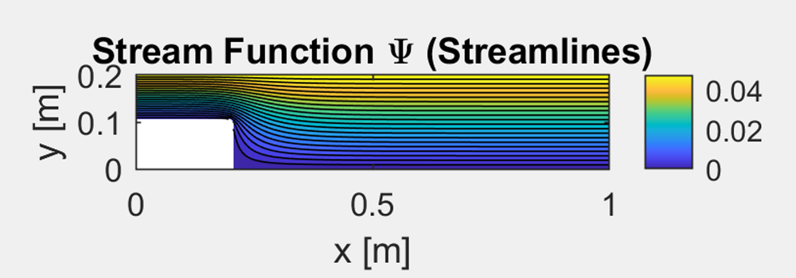
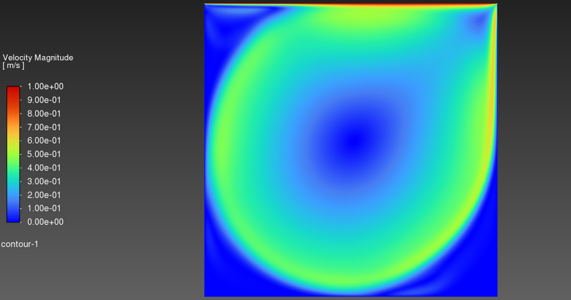
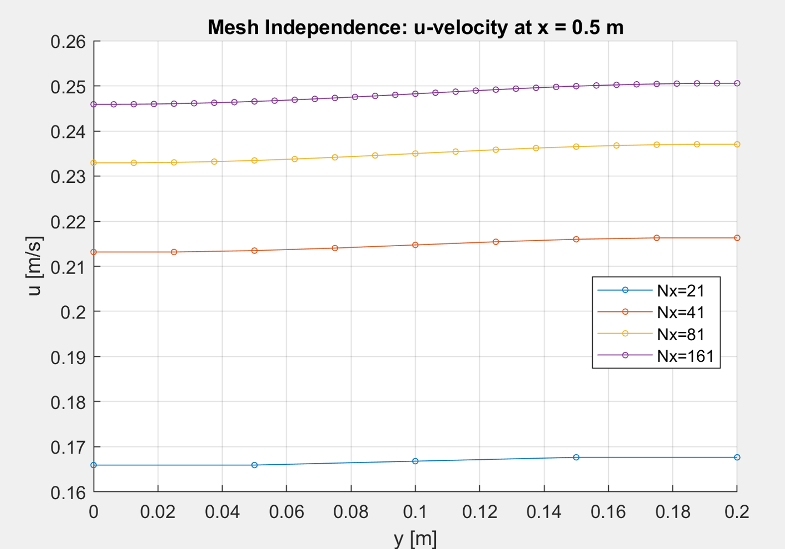

Computational Fluid Dynamics Coursework
Project 1: L-Shaped Duct Potential Flow via SOR in MATLAB
This project involved solving Laplace's equation for incompressible, irrotational flow through an L-shaped duct with a notch removed from the bottom-left corner. I implemented the Successive Over-Relaxation (SOR) method in MATLAB, applying boundary conditions for a uniform inlet velocity, zero normal gradient along walls, and a zero streamwise velocity gradient at the outlet. From the converged velocity potential, I derived the full velocity field, pressure distribution (via Bernoulli's equation), and stream function. A mesh independence study across four grid refinements (Nx = 21 to 161) confirmed the solution was converging, with the finest grid used for final results.

Project 2: Lid-Driven Cavity - Reproducing the Ghia et al. Benchmark
The Ghia et al. lid-driven cavity is one of the most widely used validation cases in CFD. I recreated the 2D square cavity in ANSYS Fluent at Re = 10,000, with the top wall moving at 1 m/s and all other walls stationary. A mesh independence study across four structured grids (32x32 through 256x256) showed the 128x128 and 256x256 results were nearly identical, so the 256x256 mesh was selected for the remaining analyses. Comparing the centerline velocity profiles against Ghia's published data showed good agreement, with most points falling within 1-5% error.
I then ran six turbulence models (Spalart-Allmaras, three k-epsilon variants, k-omega Standard, and k-omega SST) on the same mesh and compared them against the laminar baseline. The laminar model matched the benchmark most closely, which was expected since Ghia solved the laminar Navier-Stokes equations. Among the turbulence models, k-omega SST performed best, while the k-epsilon variants underpredicted peak velocities by 40-50%.

